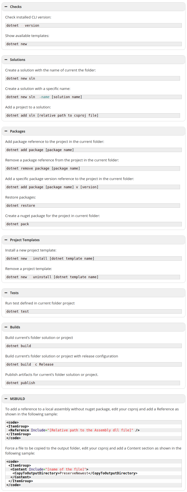

Checks
Check installed CLI version:
dotnet --version
Show available templates:
dotnet new
Solutions
Create a solution with the name of current the folder:
dotnet new sln
Create a solution with a specific name:
dotnet new sln --name [solution name]
Add a project to a solution:
dotnet add sln [relative path to csproj file]
Packages
Add package reference to the project in the current folder:
dotnet add package [package name]
Remove a package reference from the project in the current folder:
dotnet remove package [package name]
Add a specific package version reference to the project in the current folder:
dotnet add package [package name]-v [version]
Restore packages:
dotnet restore
Create a nuget package for the project in current folder:
dotnet pack
Project Templates
Install a new project template:
dotnet new --install [dotnet template name]
Remove a project template:
dotnet new --uninstall [dotnet template name]
Tests
Run test defined in current folder project
dotnet test
Builds
Build current’s folder solution or project
dotnet build
Build current’s folder solution or project with release configuration
dotnet build -c Release
Publish artifacts for current’s folder solution or project.
dotnet publish
MSBUILD
To add a reference to a local assembly without nuget package, edit your csproj and add a Reference as shown in the following sample:
<code>
<ItemGroup>
<Reference Include="[Relative path to the Assembly dll file]" />
</ItemGroup>
</code>
Force a file to be copied to the output folder, edit your csproj and add a Content section as shown in the following sample:
<code>
<ItemGroup>
<Content Include="[name of the file]">
<CopyToOutputDirectory>PreserveNewest</CopyToOutputDirectory>
</Content>
</ItemGroup>
</code>